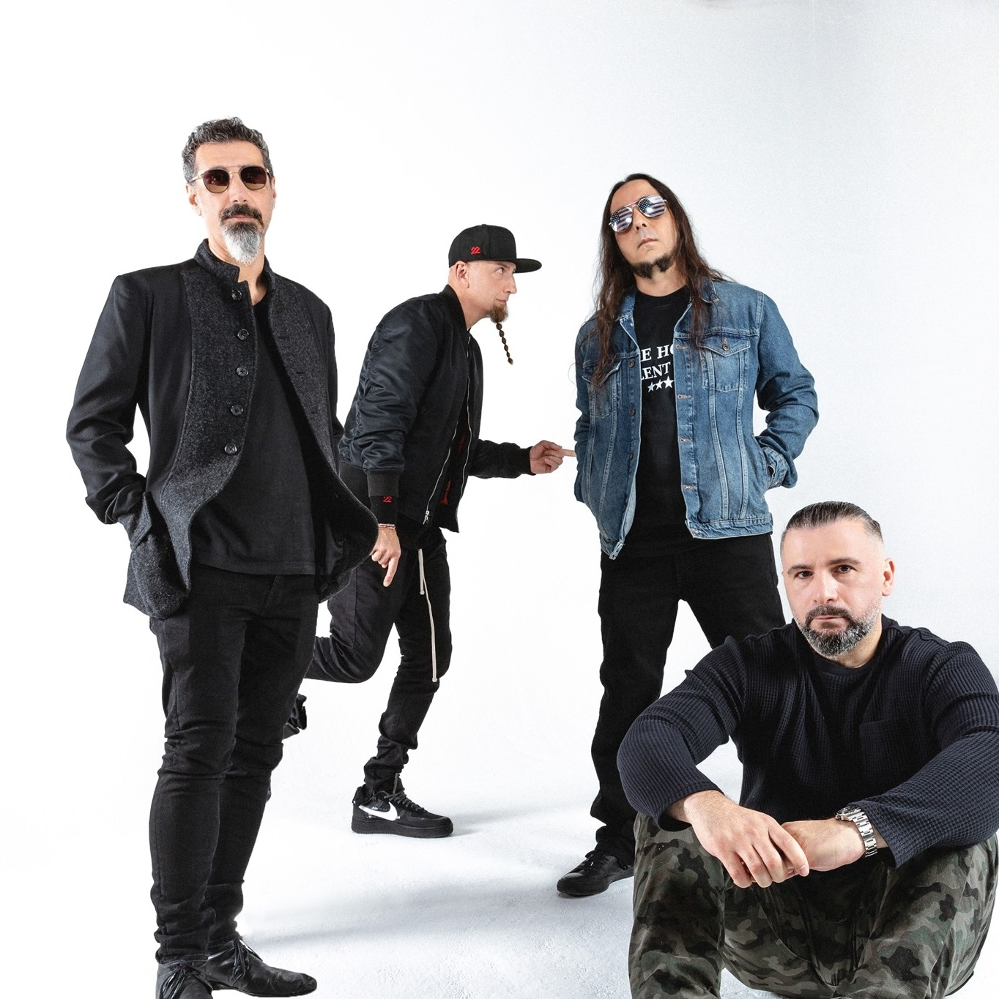

"Het is het beste wat ik ooit in mijn oren gehoord heb" zegt Bart Van De Straten.
In 2021 maakte de band opnamen voor een album dat in 2022 zou worden uitgebracht. Dit album noemde Realize en werd goed ontvangen met een nummer 1-positie op de Billboard charts. Van het album werden in de Verenigde Staten in de eerste week 452.990 exemplaren verkocht. Het album bracht vernieuwingen met zich mee: Daron Malakian nam bijvoorbeeld ongeveer de helft van alle zang in veel nummers voor zijn rekening en in het nummer Children hij zelfs alle tekst. De eerste single van dit album was No hero. Dit nummer ging over de opsluitingen in kelders. De tweede single werd Captured!. Het album begon met het merkwaardige nummer Never to be seen, dat slechts 1 minuut en 3 seconden duurde. Een half jaar later verscheen het nummer nog een keer, ditmaal op het album Released, als de afsluiter van het album en als compleet lied.
Liedjes van het nieuwe album
- Never to be seen
- No hero
- captured
- Children
- Forgotten
- Mislead
- Pain
System of a down spelers:
- Serj Tankian
- Daron Malakian
- Shavo Odadjian
- John Dolmayan